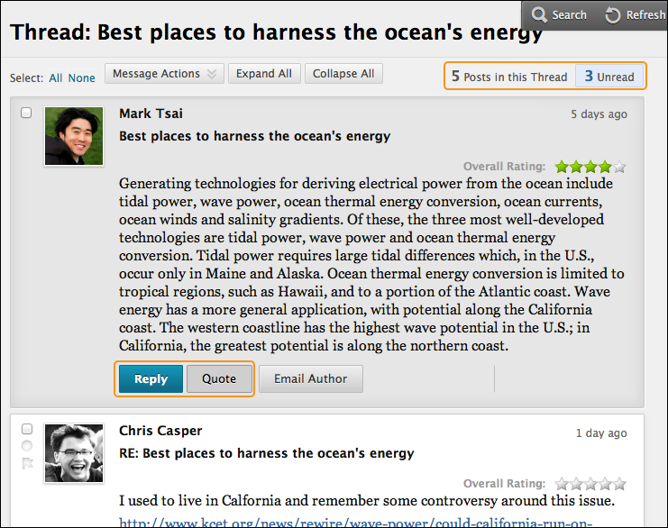
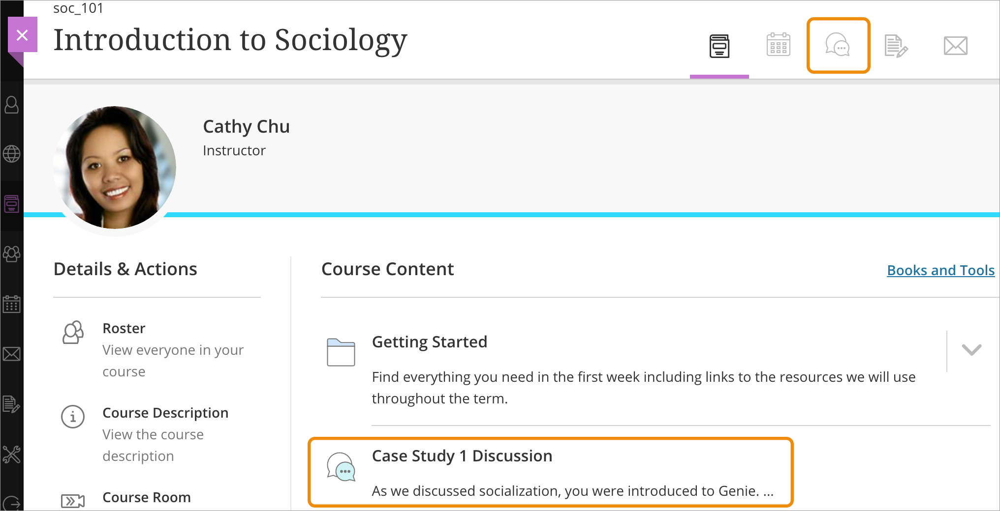
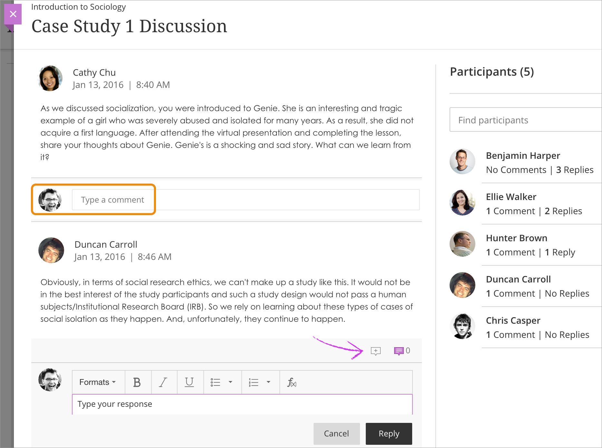

Reply to Discussion Posts
In the discussion board, threads grow as users respond to the initial and subsequent posts. Replies build on one another to construct a conversation. As the number of posts grows, you can filter, sort, and collect posts.
You can edit or delete your replies if allowed by your instructor. If you post a reply in error and the options to edit or delete don't appear, contact your instructor.
More on editing and deleting replies
Reply to a thread
Doesn't seem familiar? Jump to the "Ultra" help about replying to a discussion.
You can reply to published threads, but you can't reply to locked or hidden threads.
- Open a thread inside a forum.
- On the thread's page, you can view the text of the post and information, such as the author and posted date. All replies appear on the same page with the parent post.
- Point to the post to see functions such as Reply, Quote, Edit, Delete, and Email Author. The Quote function includes the post's text as part of your reply. Select Reply. If you want to view only the unread posts in the thread, select Unread. The unread posts appear on one page.

- The page expands below the post you're responding to. You can view the post and access the editor.
- If needed, edit the Subject. Type your reply in the Message box. You can also attach a file.
- After the Message box, you can attach a file. Select Browse My Computer to upload a file from your computer. You may also be allowed to upload a file from the course's file repository: the Content Collection.
If you upload a file from your computer, it won't be saved to the Content Collection.
- Select Save Draft to store a draft of the post or select Submit to publish your reply.
On the thread page, your reply appears at the end of the list. If you attached a file, a paper clip icon appears next to the post's title. If you used the Insert/Edit Image function, the image appears with the text.
More on editing and deleting replies
Save a post as a draft
You can use the Save Draft option if you need to return to your post at a later time. This function saves your comments and files on the page.
To access your drafts, return to the forum page and set it to List View. Point to Display and select Drafts Only to view the saved post.
Select the draft's title to open the Thread page. While viewing your post, point to it to view the functions for Edit and Delete. Select Edit to open the content editor. After you make your updates, select Save Draft again to update the draft or Submit to publish the post.
More on saving your posts as drafts with JAWS
Rate posts
If allowed by your instructor, you can rate posts. Rating posts helps users focus on messages the others consider especially informative or useful.

Students start threads and include their work in their initial posts. Other users review the work, assign a rating to the initial post, and include comments in a response. Instructors can also rate posts.
- Open a thread inside a forum.
- On the thread's page, when you point to a thread's rating area, it changes to show Your Rating.
- Select one to five stars. You can add and remove stars at any time.
- Your rating is included in the Overall Rating—the combined rating of all users.
More on rating posts with JAWS
ULTRA: Reply to a discussion
Doesn't seem familiar? Jump to the "Original" help about replying to a discussion.
The activity stream appears first when you access Blackboard Learn. You can participate in discussions for all of your courses from the stream. Select a discussion and a layer opens. Type your response, close the layer, and return to the stream.

In a course, select the Discussions icon on the navigation bar to access the discussions page. Select a discussion to join in. You may also be able to access a specific discussion on the Course Content page.

You can add a comment or reply to one of your classmates. You can use the functions in the editor to format text.

To use your keyboard to jump to the editor toolbar, press ALT + F10. On a Mac, press Fn + ALT + F10. Use the arrow keys to select an option, such as a numbered list.
You don't have to sift through all of the course discussions to find the one you need. You can filter by participant name and see a list of contributions.